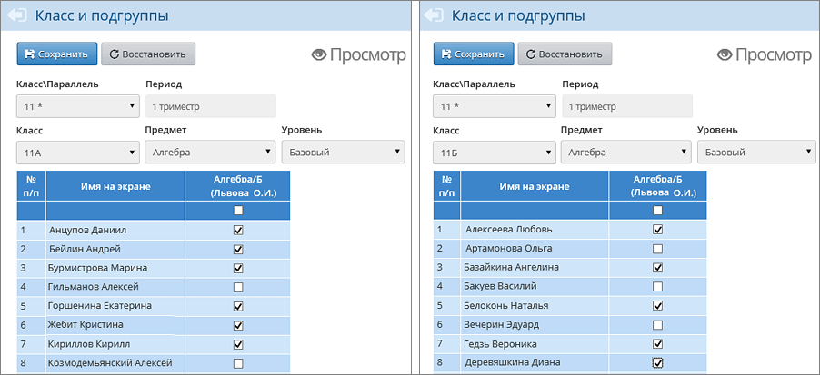
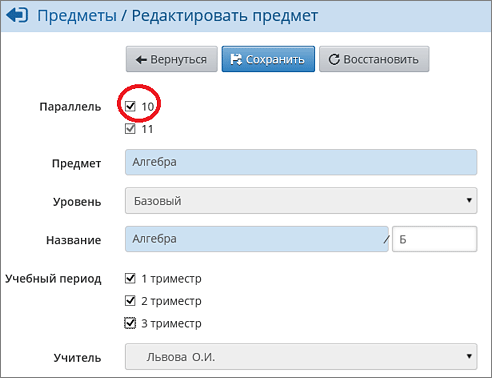
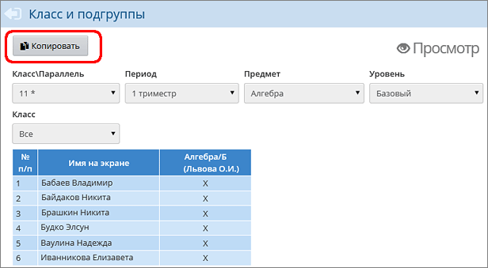
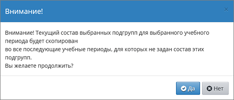

После этого откройте экран Обучение -> Подгруппы. Вы можете зачислить учащихся в ПГ, выбрав их из разных классов и даже из разных параллелей. Для этого:
| 1. | Выберите параллель с ИУП (она отмечена звёздочкой), в которой идёт набор в ПГ.
|
| 2. | Выберите учебный период, предмет и уровень освоения. Система покажет в таблице все ПГ, имеющие данный уровень.
|
| 3. | В последнем выпадающем списке нужно выбрать класс, из которого желаете выбрать учеников. Последовательно выбирайте нужные классы, отмечайте учеников для зачисления и нажимайте кнопку Сохранить. Так, например, на следующих иллюстрациях выбор учащихся в «базовую» группу происходит из 11а и 11б:
|
 |
Как обеспечить возможность зачисления в ПГ из другой параллели, например, в 11* из 10-го класса?
Для этого нужно перейти на экран Обучение -> Предметы, щёлкнуть по названию конкретной ПГ и отметить галочками все параллели, из которых может происходить зачисление. В следующем примере, после того как нажата кнопка Сохранить, в «базовую» группу по алгебре можно будет зачислять учеников из 10-х классов.

Если в следующем учебном периоде состав предмето-групп практически не изменился, как быстро провести зачисление учащихся в предмето-группы?
Есть удобная возможность скопировать состав ПГ в следующие учебные периоды. Для этого на экране Обучение -> Подгруппы выберите:
| · | параллель с ИУП;
|
| · | период, который является «эталоном» состава учащихся;
|
| · | предмет и уровень его освоения,
|
| · | а в качестве класса выберите «Все».
|

По нажатию кнопки Копировать система выдаст сообщение, с которым нужно согласиться:
